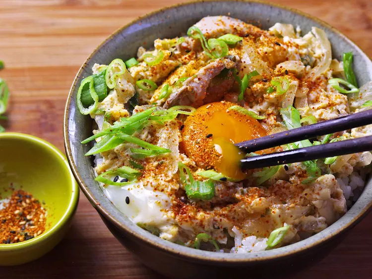

Oyakodon
Adapted from J. Kenji Lopez-Alt's recipe on Serious
Eats

Description
Oyakodon is one of my favorite recipes, especially in the fall/winter. It's a very cozy dish from Japan,
consisting of chicken, egg, onions, and rice in a bowl.
Ingredients
- 1 cup (240ml) homemade or instant dashi
- 2 tablespoons (30ml) dry sake, dry sherry, or shaoxing wine
- 2 tablespoons of soy sauce
- 2 tablespoons of sugar
- 1 yellow onion
- 12 ounces of boneless skinless chicken thighs, sliced as thin as possible
- 3 green onions, sliced thin at a bias
- 3 large eggs
To serve:
- 2 cups white rice
- Togarashi to taste
Steps
- Combine dashi, sake, soy sauce, and sugar in a small saucepan and bring to a simmer over high heat. Adjust
heat to maintain a strong simmer. Stir in onion and cook, stirring occasionally, until onion is half tender,
about 5 minutes. Add chicken pieces and cook, stirring and turning chicken occasionally, until chicken is
cooked through and broth has reduced by about half, 5 to 7 minutes. Stir in half of scallions , then season
broth to taste with more soy sauce or sugar as desired. The sauce should have a balanced sweet-and-salty
flavor.
- Reduce heat to a bare simmer. Pour beaten eggs into skillet in a thin, steady stream, holding chopsticks
over edge of bowl to help distribute eggs evenly. Cover and cook until eggs are cooked to desired doneness,
about 1 minute for runny eggs or 3 minutes for medium-firm.
- To Serve: Transfer hot rice to a single large bowl or 2 individual serving bowls. Top with egg and chicken
mixture, pouring out any excess broth from saucepan over rice. Add an extra egg yolk to center of each bowl,
if desired. Garnish with remaining sliced scallions and togarashi. Serve immediately.